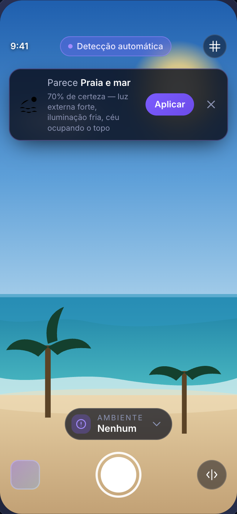
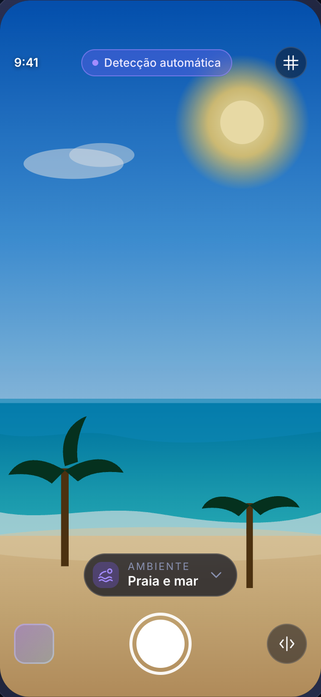

O desafio
Os celulares atuais, incluindo os da marca Jovi, possuem diversos filtros nativos na câmera, porém:
- Muitos usuários não sabem qual filtro usar em cada ambiente;
- O excesso de opções gera indecisão;
- As fotos podem ficar com aparência artificial ou mal ajustadas;
- Usuários não entendem termos técnicos como: Dramático quente, Vibrante…
ResultadoExperiência confusa e pouco prática.

Cada ambiente, um resultado diferente

 sem filtrocom filtro
sem filtrocom filtro
Ao ar livre
Praia e mar

 sem filtrocom filtro
sem filtrocom filtro
Ambiente fechado
Cinema

 sem filtrocom filtro
sem filtrocom filtro
Ambiente fechado
Academia
Imagens do protótipo com o preset de cada ambiente aplicado sobre as cenas de demonstração Orla ao meio-dia, Rua à noite e Café. Valores: os quatro maiores ajustes, como no recibo do app.
Demonstração
01 · sugereA detecção sugere Praia e mar, com 70% de certeza.
02 · aplicaUm toque aplica o ambiente. Não existe botão de confirmar.

Protótipo · cena de demonstração
Abrir a câmera do protótipo

Interface
Sem filtro
Com filtro